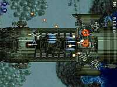

|

Review

Game Type: 2D Overhead View Shooter
Set just after World War II, but your WWII-era planes are given
ridiculously powerful guns and pitted against gigantic transforming robots.
Top-down view.
Gameplay: 95/100
Ah, I do so love a good shooter. Strikers launches enough ammo at you to
make your jaw drop. Fortunately the bullets move slowly enough (except on the
hardest difficulty levels) that you can weave your way through all but the
densest clusters. Gives you a pretty good feeling when you've beaten one of
the more trigger-happy bosses without losing a life.
There are 6 planes to choose from, each with its own weapon type (sorry, no
switching in mid-game). Each can be powered up 4 times, and as you gain power
little mini-planes (options) join up with you, flying in a formation that
varies according to your choice of planes. Each plane also has a special
attack charged up by holding down the shot button, and its own type of bomb.
There are lots of little nuances to using each plane that add a lot of variety
to the game.
I do have a couple complaints. The game is far too short. There are only 8
stages, each about half the length of a Raiden II stage. Also, you're given
an infinite number of continues (with no way to limit them that I've
discovered). I beat the game in the first half hour. Since then I've been
limiting myself to one or no continues, and the game has been much more
enjoyable.
Graphics: 85/100
Except for the nifty prerendered intros Strikers makes no pretense of being
3D, which is why I fear it will never be brought out in the States. It's a
notch below Raiden II graphically, but still pretty decent. The art for the
stages is dark and brooding, appropriate for the WWII setting but not quite
to my taste. The weapons and bomb effects have lots of flash. Sorry anime
junkies, although you can tell the artwork is Japanese it's definitely not
anime/manga-style. A cool option borrowed from Raiden Project is the ability
to project the game image sideways, so if you have a monitor you can set it
on its side and play with a full-size screen (and it doesn't mess up the
controls, either).
Sound: 50/100
The music (which is swap-friendly) isn't annoying but it's not on par with
the beautiful tunes I've become accustomed to on the PS. Sound effects have
decent clarity but no real volume. Merely average.
Overall: 90/100
It's not by Capcom, but Strikers 1945 has a lot of the flavor of the 194X
series. If you're lucky enough to have Gunbird in a local arcade give it a
spin and you'll have an excellent idea what Strikers is like (sans cutesy
graphics), since it's by the same developer. As far as graphics and audio
it's not too fancy, but gameplay-wise it's pretty addictive. A safe bet as
an import for any shooter fan. (Just don't abuse the infinite continues!)
|